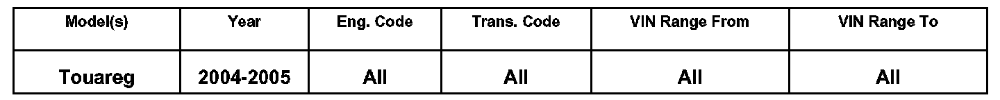
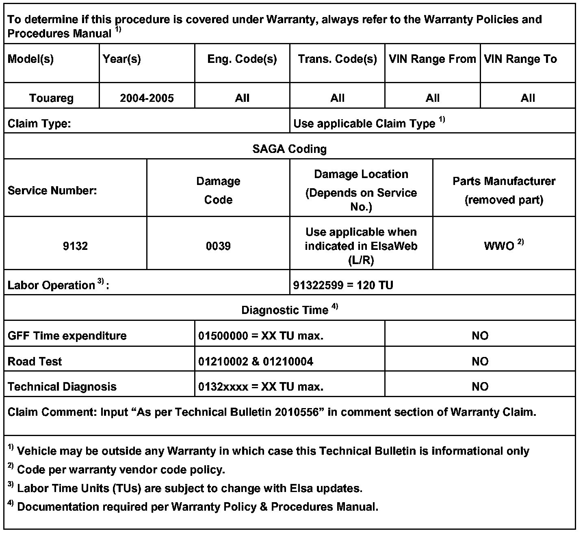
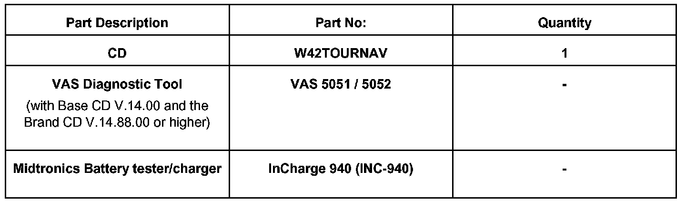

Navigation System - Causes Battery Drain: Overview
9109-01
Affected Vehicles
Condition
91 09 01 January 14, 2009 2010556 Supersedes T. B. Group 91 bulletin number 04-11 dated Dec. 24, 2004 due to "bulletin reissued"
Navigation Software update Due to No Start - Battery Drain Condition
Technical Background
Touareg Navigation systems with software Version 0633 and lower, need to be updated with software version 0635 to eliminate the effects of Radio Stations falsely transmitting an RDS signal, which may cause a battery drain.
Production Solution
Update Navigation software.
Warranty

Required Parts and Tools
No Special Parts required.

Tip: Additional copies of the "Update - Programming" CD (Literature Number CD W42TOURNAV) may be ordered from the Volkswagen Technical Literature Ordering Center.
Additional Information
All part and service references provided in this Technical Bulletin are subject to change and/or removal. Always check with your Parts Dept. and Repair Manuals for the latest information.